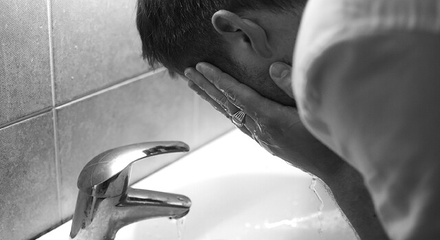

Is it Okay to Rinse Your Eyes with Tap Water?
The safety of rinsing your eyes with tap water mostly depends on whether or not you wear contact lenses.
How Safe Is It To Rinse Your Eyes With Tap Water?
Apr 25, 2023
The safety of rinsing your eyes with tap water mostly depends on whether or not you wear contact lenses.

In case of an emergency , such as a foreign object, chemical, irritant or burn in the eye, here's how to rinse your eyes:

If you experience any of the following symptoms, you should see an eye doctor as soon as possible:
Home » What’s New » How Safe Is It To Rinse Your Eyes With Tap Water?
Our eyes are among our body's most essential and sensitive organs. They can be exposed to different irritants, such as dust, smoke, and allergens, which can cause discomfort, redness, and even infections. As a result, many people turn to rinsing their eyes but the question is: how safe is it to rinse your eyes with tap water?
Water from your sink may be fine for those who do not wear contact lenses. If you get a foreign object or irritating chemical in your eye, washing your eyes with fresh water can help remove the substance and reduce discomfort. Remember to tilt your head so that the affected eye is down to avoid accidentally flushing the object into the other eye.
On the other hand, rinsing the eyes with tap water is not recommended for contact lens wearers. Tap water often contains microorganisms, such as bacteria, viruses, and amoebae, that are usually harmless but can cause severe eye infections like acanthamoeba keratitis under certain circumstances. Contact lenses can trap these microorganisms against the eye's surface, increasing the risk of disease. If you're wearing contacts, you must avoid exposing your eyes to regular water, including while showering or swimming. If you need to rinse your eyes for any reason, it's recommended to use a sterile saline solution or contact lens solution specifically formulated for use on the eyes.
If your eyes are feeling dry, a lubricant like natural tears can help soothe dry eyes more effectively than water. Speak to your eye care professional for more information.
Wash your hands thoroughly with soap and water to avoid introducing germs into your eyes.
Use sterile saline or contact lens solution, specifically formulated to be safe for use on the eyes, and flush your eyes with it.
If you don't have saline or contact lens solution, you can use clean, lukewarm water. Avoid using very cold or hot, as it can be uncomfortable or even harmful to your eyes.
Tilt your head back, open your eyes, and pour the solution or water into the inner corner of your eye, letting it flow across your eye and out of the outer corner. If the irritant is only in one eye, tilt your head with the affected eye down, to avoid flushing the object into the other eye.
Repeat the process until your eye feels better, but avoid rubbing or touching your eyes with your hands or a cloth.
Severe pain or discomfort in your eyes
Dry eyes
Blurred or decreased vision
Redness, swelling, or discharge from your eyes
Sensitivity to light
A foreign object stuck in your eye that you can't remove
These symptoms may indicate an eye infection, condition, or injury that requires prompt treatment to prevent complications. If you experience any unusual symptoms or discomfort in your eyes, don't hesitate to consult an eye doctor for a proper diagnosis and treatment.
Call us at Eye Shop in Houston at 713-977-8464 to schedule an appointment today.

Eye Shop - Located at 13130 Memorial Drive, Houston, TX 77079. Phone: 713-977-8464